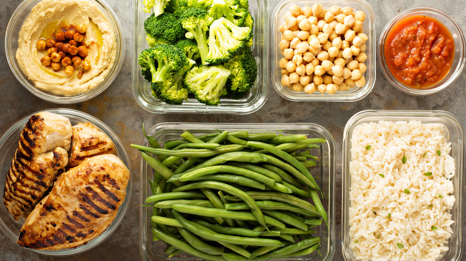

About Prep & Chef
Helping busy people plan, prep, and cook healthy meals without stress. Meet our founder, Jordan Ellis, and learn how Prep & Chef started.

Jordan Ellis
Founder & Meal Planning Consultant — A New Orleans native, Jordan grew up surrounded by vibrant culinary traditions. Inspired by her family’s recipes and busy restaurant work, she developed a passion for simplifying meal planning and helping others enjoy home-cooked meals stress-free.
Jordan started Prep & Chef to create practical tools for busy professionals and families: organized ingredient lists, prep-and-store guides, step-by-step recipes, and quick 30-minute meals. Her mission is to make cooking accessible, efficient, and enjoyable.
Our Mission & Goals
- Provide an easy-to-use, visually clean website for meal planning and recipes.
- Offer step-by-step cooking guides, ingredient lists, and prep templates.
- Create a dedicated section for quick, healthy 30-minute meals.
- Empower users to cook efficiently and eat well, even on a busy schedule.